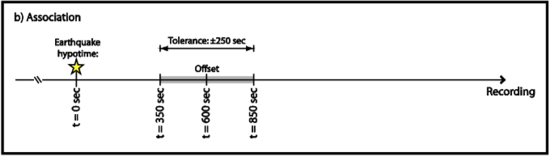

Calculate PRFs for a station¶
1. Perpare seismic records order by stations¶
Seismic data should be trimed according earthquakes, including direct P arrival. Meanwhile, the data should be order by stations instead of events. For example, YN001 and YN002 are stations the SAC files are data of events recorded by these stations.
event_data/
├── YN001
│ ├── 2018.229.15.35.02.1.sac
│ ├── 2018.229.15.35.02.2.sac
│ ├── 2018.229.15.35.02.3.sac
│ ├── 2018.229.22.06.55.1.sac
│ ├── 2018.229.22.06.55.2.sac
│ │......
├── YN002
│ ├── 2018.229.15.35.02.1.sac
│ ├── 2018.229.15.35.02.2.sac
│ ├── 2018.229.15.35.02.3.sac
│ ├── 2018.229.22.06.55.1.sac
│ ├── 2018.229.22.06.55.2.sac
│ │......
2. Calculate PRFs using a simple command¶
2.1 Prepare a configure file¶
We should perpare a configure file as following including all parameters that will be set during the calculation. The format is following Python module of configparser
[path]
datapath = Data/Path/to/station_name
rfpath = Result/Path/to/station_name
imagepath = Path/to/images
catalogpath = Path/to/catalog
[search_eq]
date_begin = 20110701
date_end = 20111101
catalog_server = IRIS
magmin = 5.5
magmax = 10
dismin = 30
dismax = 90
[match_eq]
dateformat = %Y.%j.%H.%M.%S
ref_comp = .1.
suffix = SAC
tolerance = 60
offset =
[snr]
noisegate = 5
noiselen = 50
[filter]
freqmin = 0.05
freqmax = 2
[trim]
time_before = 10
time_after = 120
[deconv]
gauss = 2
itmax= 400
minderr = 0.001
[save]
target_dt = 0.01
only_r = no
criterion = crust
2.2 Run in command line¶
We have provided the command prf. The usage is shown as:
usage: prf [-h] [-l] cfg_file
Calculating RFs for single station
positional arguments:
cfg_file Path to RF configure file
optional arguments:
-h, --help show this help message and exit
-l use local catalog. Default is false
cfg_file: configure file shown above.-lif the argument was specfied, a local file of catalog would be used in searching earthquakes.
3. Initalize a project instance¶
To further understand the procedure of the command prf, we recommend calculateing PRFs with writing a Python script as following steps.
First, let’s init a rfinstance. In this instance, we can set parameters, match earthquakes from catalog and calculate PRFs.
from seispy.rf import RF
from os.path import join
from obspy import UTCDateTime
pjt = RF()
4. Set parameters¶
Most of parameters are saved in pjt.para. Let’s show all default parameters
print(pjt.para.__dict__)
{'_datapath': '/Users/xumj',
'_rfpath': '/Users/xumj',
'_imagepath': '/Users/xumj',
'_catalogpath': '/Users/xumj/.pyenv/versions/anaconda3-5.3.1/lib/python3.7/site-packages/seispy-1.1.8-py3.7.egg/seispy/data/EventCMT.dat',
'offset': None,
'tolerance': 210,
'dateformat': '%Y.%j.%H.%M.%S',
'date_begin': 1976-01-01T00:00:00.000000Z,
'date_end': 2019-07-11T14:04:15.365860Z,
'magmin': 5.5,
'magmax': 10,
'dismin': 30,
'dismax': 90,
'ref_comp': 'BHZ',
'suffix': 'SAC',
'noisegate': 5,
'gauss': 2,
'target_dt': 0.01,
'phase': 'P',
'time_before': 10,
'time_after': 120,
'only_r': False}
Thus, we can set them in our scripts
pjt.para.datapath = 'Data/Path/to/station_name'
pjt.para.rfpath = 'Result/Path/to/station_name'
pjt.para.suffix = 'sac'
pjt.para.ref_comp = ".1."
pjt.date_begin = UTCDataTime('20180701')
pjt.date_end = UTCDataTime('20190701')
pjt.para.offset = 0
pjt.para.tolerance = 60
or in a configure file as above. When you want to initialize an instance using this configure file, please add the path to RF() as:
pjt = RF(cfg_file='path/to/config')
5. Search earthquakes from catalog¶
We use the same process as the SplitRFLab. To match the data records and events, we should search earthquakes with some criteria (period, epicental distance and maganitude).
5.1 Load station infomation¶
the The station latitude and longitude are absolutely necessary when we are used to search earthquakes. the function will read stla and stlo of SAC header from files in pjt.para.datapath.
pjt.load_stainfo()
5.2 Search earthquakes¶
the function provide two method to search earthquakes. use
pjt.search_eq()
to search earthquakes in IRIS Web service with the CMT catalog.
In addition, the function allow to perpare earthquakes from a CMT catalog file (saved to seispy/seispy/data/EventCMT.dat). Use command updatecatalog to update the catalog file.
pjt.search_eq(local=True)
6. Associate SAC files with events¶
This is a important step, which allow to link SAC files and earthquakes in catalog. The pjt.para.dateformat, that is a format string as in time.strftime, including datetime infomation will allow to match events in catalog. For example, assuming the filename is 2018.229.15.35.02.1.sac. the pjt.para.dateformat should be %Y.%j.%H.%M.%S.
A reference sac file will read to Associate with events. Thus, file-search-string will help to find real SAC files in data path. In this program file-search-string composed of pjt.para.ref_comp and pjt.para.suffix. The presence of *pjt.para.ref_comp*pjt.para.suffix, such as *.1.*sac in this example, for SAC files will be found.
the pjt.para.offset and pjt.para.tolerance` are used to match the origin time from catalog. The definition are the same as those in SplitRFLab.
- The “offset” is the time duration between the event time and the starting time of your seismograms. Ideally, this offset should be identical to the “request start time” defined in the previous window but the data management center may have sent you data beginning later than requested. The offset value represents this difference.
- The “Tolerance” value in seconds will define the time window within which the program will try to associate a seismic file to an event file, by using either its name or the information contained in the header. It is up to the user to find the best compromise: a value too small will let orphans and a value too large will bring confusion since several files could be associated to a seismic event. 
After setting up these parameters, use following command to match data records to the catalog:
pjt.match_eq()
7. Pretreatment¶
The process of pretreatment include retrend, bandpass filter, calculating arrival time, reject bad record with low SNR, trim records and rotate components from NE to RT.
7.1 Filter¶
We will aply a bandpass filter on seismic records. Two corners shoud be specfied.
para.freqmin: Pass band low corner frequency.para.freqmax: Pass band high corner frequency.
7.2 Signal-noise-ratios¶
Bad records will be rejected in this step. We will reject records with SNR < para.noisegate. The SNR was calculated as:
$$
SNR = 10log_{10}\left(\frac{A_S}{A_N}\right)
$$
where $A_N$ and $A_N$ are root mean squares (RMS) of the waveform in
a para.noisrlen time-window before and after theoretical P arrival times, respectively.
7.3 Trim¶
The waveforms will be cut in this step before para.time_before and after para.time_after theoretical P arrival times, respectively.
pjt.detrend()
pjt.filter() # default using 'para.freqmin' and 'para.freqmax'
pjt.cal_phase()
pjt.drop_eq_snr() # The threshold used as 'para.noisegate'
pjt.trim() # from 'para.time_before' before P to 'para.time_after' after P
pjt.rotate()
8. Calulating PRFs¶
We need parameters of pjt.para.gauss, pjt.para.itmax and pjt.para.minderr to calculate PRFs using iterative time-domain deconvolution method
pjt.para.gauss: Gauss factor. Default is 2.0pjt.para.itmax: The maximum number of iterations. Default is 400pjt.para.minderr: The minimum misfit. Default is 0.001
pjt.deconv()
9. Save PRFs¶
Save the PRFs to pjt.para.rfpath with some criteria. Two kind of criteria allow to set (i.e., crust or mtz). if the parameter set as None, all of PRFs will be saved.
crust¶
- The max peak should appare berween -2s and 2s
mtz¶
- The max peak should appare berween -5s and 5s
- the maximum amplitudes of PRFs in a 30–120 s window after the direct P are smaller than 30% of the maximum amplitudes of the direct P phases.
pjt.saverf(criterion='crust')